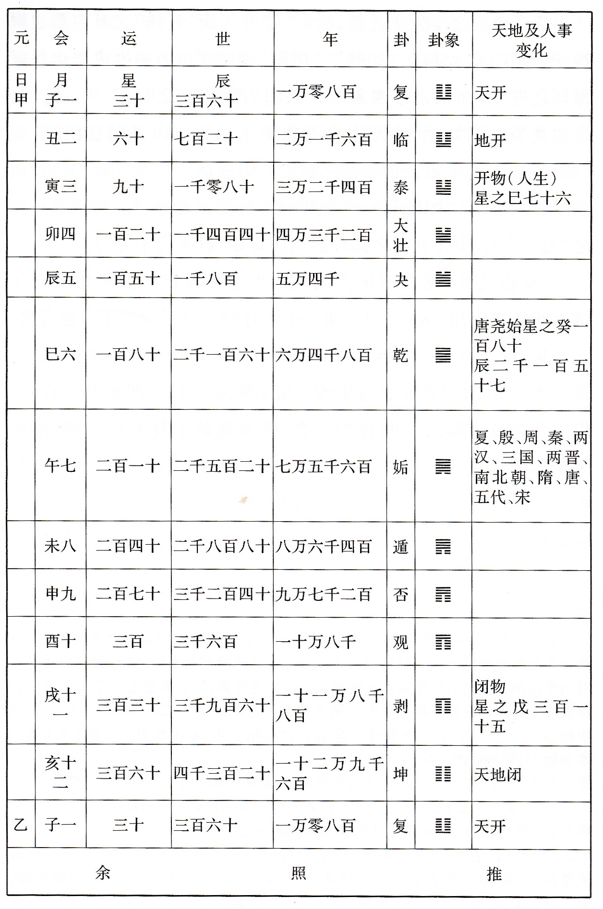
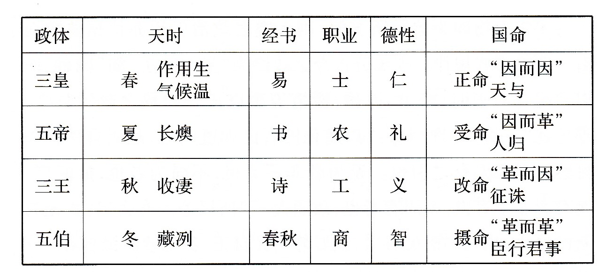

萧公权：《中国政治思想史》，“第二编：专制天下之政治思想——因袭时期”，北京：商务印书馆，2018。
第八章：秦汉之墨与法
第一节：墨学之消沉
秦灭六国为吾国政治史上空前之巨变。政制则由分割之封建而归于统一之郡县，政体则由贵族之分权而改为君主之专制。政治思想与此巨变相应，亦转入一新段落。
墨学衰微乃秦汉思想史中最引人注目之一事。综其要点，不外三端：
- 他家之攻击。
- 环境之改变：嬴氏统一封建易为郡县，则尚同非攻之说无所用，节用、节葬、非乐不能行，天志明鬼之神道设教，必以简单朴拙而见摒，然墨徒不能修改师说以适应之。
- 墨学本身之困难。
而后二者似较重要。
第二节：李斯
法家思想为秦政之础石。其术大行于商鞅，其学大成于韩非至李斯（？-前208）则盛极而衰，法家之政治遂随秦以共亡。
李斯之政治主张约有四端：
- 尊君。
- 集权。
- 禁私学。
- 行督责。
尊君重刑之术，二世用之不数年而身弑国亡。胡亥诚昏庸骄恣，然：
- 权力无限则易流于滥用。
- 继体之君多庸愚而少英明。
此乃人类政治生活中不可否认之事实。故，即始皇不死于三十七年，恐亦未必能久维治安。
古今论秦政者或讥其任刑法以致亡；或惜其行法治而不能久。然吾人以为秦以专制失道而早亡，与法治殊少关系。法治与专制之别，在前者以法律为最高之威权，为君臣之所共守；后者为君主最高之威权，可以变更法律。
商韩所谓重刑，李斯所谓深督，以此为法治，则凡政府皆法治。商韩之专制思想，嬴秦之专制政府，貌似法治，而实与法治根本不相容。专制与法治乃相反之两种政体，秦之覆亡乃专制之失败，非法治之失败也。
第三节：法家思想之余波
汉代申韩后学似有任法、重刑、拥专制、图富强之数派。
河南守吴公、张叔、晁错、樊晔、周纡、阳球等，言行合于尊君重刑诸旨，然皆袭前人之成说，以应当世之实用。
汉代申韩后学似有任法、重刑、拥专制、图富强之数派：
- 任法：赵禹、张汤、郅都、宁成、董宣等。
- 重刑：义纵、王温舒、严延年、王吉等。
- 拥专制：张汤、杜周等。
- 图富强：晁错、张汤、桑弘羊等。
第四节：法儒之争胜与合流
黄辕争论为法儒思想冲突之一例。然汉代儒法冲突最详之纪录，无过桓宽之《盐铁论》。
书中讨论盐铁等事因及政治原则，不外：
- 文教与武功。
- 农本与工商。
- 仁义与功利。
- 刑法与道德。
等数端。双方所主均不出先秦儒法思想。
文学首提罢盐铁、酒榷、均输之议。大夫以为诸事为征备匈奴军费所资，罢之不便。“仁者无敌”之理想决非法家所能接受。
大夫见军事之理由不能定论，乃从经济上说明其政策之需要：
- 便民之利。
- 济民之利。
- 富国之利。
- 工商之利。
- 齐民之利。
文学贤良于此诸理由，一一加以驳斥。其主要之说为传统之农本思想，认耕稼为惟一之富源。
文学等反对盐铁诸政之根本理由尚不在其施行利与不利，而在否认功利为政治之目的。
双方诘难之又一要点为刑法德教。大夫盛赞商君治秦。大夫袭商子之教，又主严刑。文学加以反驳，认定申商之治，不能治标，反伤其本。欲救一时之弊，致坏长久之基。
观《盐铁论》所述汉代儒法之争，不仅思想冲突，感情亦至决裂。看似无可调协，而又不尽然。盖汉代政治始终兼用儒法，两家势力有起伏而无废绝。儒法合流，乃专制天下环境中自然之结果。
第九章：贾谊至仲长统
第一节：儒学之复兴
儒家思想至汉代取得正统学派之地位。然吾人如袭旧说，谓秦灭古学，至汉骤兴，则又与事实不尽相符。实则始皇混一之后，既不真行法治，亦未摒弃儒术。
虽然，始皇既禁私人论学，项羽复焚咸阳官书，先秦学术确有中衰之势。所幸百家之遗编后学，犹有存者。惠帝四年（前191）除挟书之律，一反秦代消极统制之政策，而逐渐入于积极之提倡。随后经种种鼓励，儒术臻空前之盛况。
汉代儒学大体虽袭先秦之旧，然亦非绝无变动。两京四百年间之儒家政治思想似可按其内容变迁之大概，分为下列三期：
- 约当高惠文景四朝：黄老颇盛，儒家亦不免受其影响而兼尚无为。贾谊其最著之代表也。
- 自武帝迄于王莽：为时约百六十年，儒家至此虽已脱黄老之羁绊，独尊于世，然其内容已非先秦之纯儒而大异于孟荀。始则与阴阳五行之言相揉杂，终之以符命谶纬之迷信。董仲舒其声名最著之大师也。
- 约当后汉之二百年：其时朝廷犹信图谶祯祥，而一部分之儒者则已对之发生反感，于是放弃妖言，崇尚实际。然而儒学至此，势已衰微。中叶以后之王符、荀悦、仲长统等乃此期较著之代表。
第二节：贾谊
贾谊（前200-前168），雒阳人。
就其大体言之，汉初六十年中之政治思想乃鞅、斯政治失败后之反动思想。贾谊生此时代之中，调和孔孟与黄老以成一家言者也。严格言之，其学当入杂家。
贾生论政，以民为其最后之目的，以道为其最高之原理。民不仅为政治之最后之目的，亦即政治上之最后权威。君主之本身，并无绝对之尊贵。
民本诸说悉以孟子为依据，并非新创。然贾生于西汉初年大明其旨，则颇具历史上之意义，足见亡秦政治所激起思想反动之深切，与贾生对于亡秦专制之反感。
贾生论政体，纯袭儒家。其论治术则兼采黄老，言“道”为政教之本。
人民皆知苦乐贫裕之分，而未能自至于仁义智信之德。君上之教，实为政治中之要务。孟子第言君身为安危所系而未尝注意于保证君身之必正。贾生乃弥补其阙，以教太子为培良君之方法，儒家之人治思想于此遂更趋周密。
贾生不独明君臣之分，又欲重整周代阶级之组织，对于始皇之郡县制亦不能同情。
第三节：董仲舒
天人相应之说，起源远在春秋之前。
董仲舒（前179-前104）则阐明天权以限制君意，而为西京诸儒之巨擘。
欲明董子之政治思想，当先略述其哲学思想。董子谓一切事物皆有本原，六合之中成形具象者，无一非天地之所生，则天地又为万物之元。然则元与天地，实一事而两名；天可统地，而天者真万物最先之本原矣。故万物之中，天人之关系最为密切。
董子天人关系之理论实为天君关系之理论。其要旨为：
- 法天：官职象天之五行以定，人类社会政治之基本组织，皆取法于阴阳。
- 政制象天，则政事亦势必与阴阳五行相应。
- 天不仅于君位之予夺制裁人主，即在日常政事之中亦时时鉴临，因其得失而示以妖祥。
天权对君权之限制：
- 予夺国祚：革命受命之理论。
- 监督政事：灭异谴告之理论。
秦汉先后以武力取天下，似政权转移由于人力，而君主本身足以独制天下之命。董子天命之说，殆意在攻破此倾向于绝对专制之思想。
天人之关系既明，可进述董子所持君职及治术之理论。君主之职务，简约言之，为代天宣化，完成天所不能执行之工作。
董子实发挥儒家君师同体、政教一贯之旧理，非出自创。至其施教之方法，亦不外以修身立范为起点，以仁义礼乐为教材，以正名定制为条件。
惟董子以正名为承天之一事，为前人所未发。其论定制则针砭时弊，更非空泛袭古之谈。名号为天意之表现，正名实不异于法天，其所为治道之端者原因在此。治道以教化为归宿，然不可无制度以为纲纪。
董子又认定贵人争利与富人并田为不均之两大原因。董子之时，封建久亡，古代阶级之不平，亦早消失。然而专制天下固另有经济上之困难。董子明言井田不能复，则亦知土地私有制度之难于动摇也。
第四节：董子以后之天人论
西汉今文经师多言天人灾异。董子而外，其言较著而其政治思想足供吾人论述者，《春秋公羊》有眭弘，《榖梁》有刘向，《书》有李寻，《易》有谷永，《诗》有翼奉。此皆意在匡正时君，与董学宗旨小有出入。
西汉经师政治思想略具新说者殆以治《齐诗》之翼奉为最。《齐诗》特有之学说为“五际”，略与《公羊春秋》之“三统”相当，皆阐革命之义。五际者，卯、西、午、戌、亥也：
- 亥为革命。
- 卯为阴阳交际。
- 午为阳谢阴兴。
- 酉为阴盛阳微。
- 戌为阴极生阳。
元成两朝为天人革命思想盛极而衰之时期。究其原因，天人之说意在限君；然雄才英主，往往强志多欲，本不倾向于宗教迷信。即有信仰，亦宁取希冀自我长生之神仙方士，而无取乎约束自我行动之灾异五行。
天人感应之思想由灾异革命腐化而为谶纬符命，殆在哀平之际。
王莽以信符命而杀身灭族。然新室覆败以后，朝野人士并未放弃此鄙俚粗劣之迷信。在光武帝即位前之混乱期中，群雄竞智力，文人则辩符命：当时所讨论求决者，非符之是否可信，而为何人应受符命，取得天下。综括言之，共有两说：
- 异姓更王。
- 刘氏再兴。
终建武中元之世，符谶几成一种以皇帝为护法之国教。
大略言之，武昭之世明灾异者用意多在警主安民，元成以后则倾向于抑权奸以保君国。哀平之世陈符命者为篡臣作藉口，新室既败则又成止僭窃，维正统之利器。初则忠臣凭之以进谏，后则小人资之以进身。其始也臣下以灾异革命匡失政，其卒也君上取符命谶记以自固位权。邹董之学，至此遂名存而实亡。
虽然，所谓董学实亡者，就其天人革命一端言之耳。若就《公羊春秋》政治思想之全体言，则何休尚能光大阐明于后汉桓灵之世。休之天人观念大致与董子相同，论灾异亦承西汉遗意而小变其说。
第五节：桓谭至仲长统
光武中兴之后，上下分为两派：国家官书则仍守谶纬，太学清流皆弃去谶纬之说而别有所尚。非谶之论，光武时桓谭发之，几以身殉。
虽然，后汉儒生所非者图谶之妖言耳，天人灾异之说则咸视为经义圣言。然而时君不信，反为奸邪所乘。
后从诸儒不特于天人思想仍旧贯，即其政治思想之大体亦乏新创之成分。其中学术较著者有桓谭、班固、王符、崔宽、荀悦、仲长统、徐幹诸家：
- 班固为史家，明天人，尚仁义，属于儒之正统；桓、王、崔、荀、徐诸人皆意在砭时救弊，于政治原理殊少发明。
- 以儒学标准衡之，桓崔杂霸，余子较纯。
- 以时代论，桓独生于前汉中叶，余则生于和安以后，东京逐渐衰亡之百年中。
王符《潜夫论》旨在重申天治民本之政理，发挥任贤尚德之治术。其论天人君民之关系，意虽袭古而言颇精辟。符论治术，虽少新创，然每针对时代之需要，约言之，有任人、正刑与抑奢诸事。
荀悦作《申鉴》，以为“先哲王之政”有六端：
- 承天。
- 正身。
- 任贤。
- 恤民。
- 民制。
- 立业。
悦论承天，颇有新意。悦谓“人主承天命以养民者也”，天以灾异应政治之失误，则人君当见谴告而改悔。
悦一洗两汉阴阳谶纬之迷信，大明君子居易俟命之精神，折衷于儒墨孟荀之间。悦论天人不传家学，然其治术则略存荀卿礼治之遗意。
悦又主张恢复封建，殆惩于郡县制中天子孤立易生篡夺之危险。悦言略近贾生而与王符相反，盖王符着眼于王侯纵恣事实，贾荀皆表示对于专制政治之失望；而荀悦发之于东京将亡之前夕，其失望殆尤有过于贾生者。
可见，四百余年之专制天下已令有识者对之怀无限之忧疑。然而立论不能打破一王五等之循环，其诊断虽能洞明症结，而所处方剂则绝无振起沉疴之力也。
仲长统著《昌言》，书虽失传，然其思想颇有特点。其推究治乱原因，深中专制政体之病，为前人所未发。
儒家之政治思想，态度本为乐观，如孔、孟、荀。汉儒之中如贾谊、董仲舒等皆认天下事大有可为。至桓谭、王符、崔寔、荀悦诸人始渐露悲观之意，不复坚持圣君贤相，归仁化义之崇高理想，而欲以任刑参霸之术为补绽治标之方。仲长氏不仅叹世乱之愈酷，且复疑救乱之有道，无异于对专制政体与儒家治术同时作破产之宣告。此诚儒家思想开宗以来空前未睹之巨变。
考汉儒论政所以由乐观入于悲观者，其最大之原因似为专制政体实行之失败。论者始觉古今已行之政体，圣贤所立之治道，无一可以维天下长久之安平者。
第十章：《吕氏春秋》至王充《论衡》
第一节：道家与杂家
秦汉儒家政治思想，由乐观而转入悲观，道家思想亦有同样之趋势。
汉初黄老之徒，欲用清静无为之治术，以救六国嬴秦之烦苛，其宗旨已非保全小我而在安定天下。道徒既求用世，则不能纯恃无为之论。于是颇采他家，以应时变。
道家既杂采诸家，其门户与汉人所谓“杂家”，应如何区别？
杂家之杂，殆含二义：
- 一流之中门户互殊。
- 一书之中众说兼采。而兼采众说，每有轻重。或以商韩为主干，或以黄老为依归。史公之道家，即指后列之一派。
秦代汉初之“道家”，含两派：
- 变先秦老庄宗旨之“黄老”。
- 变先秦老庄内容之“道家”。
第二节：汉代之黄老
李耳之子孙虽不守家学，而乐毅后裔乃为秦汉间黄老之贤师。此后则其术盛行于朝，几压倒儒法，独为国教之势。
景帝一朝殆为黄老极盛之期。此后儒学代起。东京二百年中，黄老之徒每为“逸民”、“方术”之流，言行与政治无关。道家思想至此又恢复先秦老庄“为我”之宗旨，而为魏晋时代崇尚玄虚之先导。
汉代黄老所以由“养生”改为“治世”，复由“临民”以返于“为我”者，其根本原因仍当于历史背景求之：
- 中国经六国及秦楚之长期争乱，天下困穷，达于极点。黄老之学深合时代需要。
- 经惠文景三朝数十年之休养生息，至武帝初年遂大臻于富庶。国力既已充裕，政策自趋积极，又适值武帝为好大喜功之主，于是黄老清静之徒“功成身退”。
第三节：《吕氏春秋》
两京之黄老由“治世”而返于“为我”，秦汉之杂家则由乐观而趋于悲观：
- 《吕氏春秋》开其端。
- 《淮南鸿烈》承其流。
- 王充《论衡》极其变。
吕不韦，阳翟大贾人。
吕书之作虽在始皇混一以前，然其影响及于汉代，故述之于此。
《吕氏春秋》为反秦之书，其重己贵民道体儒用之政治思想，乃针对商韩而发。其政治意义为立新王以反秦，其思想内容为申古学以排法。
吕书中之政治思想以先秦为我之人生观为基础。全生为生活之最高理想，亦为政治最后目的。
吕氏认政治组织为个人美善生活之必要条件。法家思想之特点在以君长为政治之主体；吕氏虽重视君长之功能，然始终否认其为国家之目的。
吕氏接受孟荀顺民心、诛暴君之主张放弃战国末年趋于完成之君主专制理论，重申古代君治民本之学说。
吕氏反对专制，立论至为透辟，汉人中鲜足与之相拟者。其所鼓吹汤武吊民伐罪之义，吾人耳熟能详；其最大之贡献似在建议种种方法以限制君主，使其不得自恣：
- 顺民。
- 纳谏。
- 节欲。
- 无为。
吕氏不仅反对秦之专制政体，亦且反对其治术。其最显著者为重申德治之理想以矫正商鞅严刑赎武之失。
然吕氏书中有一端非为秦发，而旋为始皇所采用者，则五德终始之说是也。
吕氏五德终始实袭自邹衍。其治乱天遇之论则略似孟子言天命。吕氏以祸福虽由人召，成败则每出偶然。
孟子深信天下一治一乱，五百年必有王者兴；吕氏则倾向于视政治之兴衰为机缘之偶合，虽犹坚持居易俟命之态度，而实已不逮孟子之乐观。王充承之，更进一步，遂成极度悲观之治期论。
吕氏书深受道家之影响，其所含消极之成分尚不只此。贵生重己既为全书之宗旨，则逃世为我之人生观乃不容避免之结论。
第四节：《淮南鸿烈》
如谓《吕氏春秋》为汉代杂家之先河，则《淮南鸿烈》（约前130）足当“道家”之正统。
刘安著书之用意亦在颠覆时君，其所采之体例亦为兼收众说，然其宗旨独重黄老而与吕氏相殊。
《鸿烈》袭老子之意，认宇宙之本体为道，凡有形者皆由之生。一切矫揉造作之礼俗皆有害于道而不足取，率性乃人类生活之本来面目。
“人生而静”，则政治社会亦为后起之事。政治之起，在于衰世。然设君立长又非亳无利用。道散德失之后，天人之祸交迫，圣人出面救之，君道遂以成立。
《鸿烈》论治术以无为自然为本，与黄老相契。其参取明法修身之言，则又为“道家”之本色。
无为之义既为因物之自为，顺性之自然，则专制政府之高压统制政策，在所摒弃。盖物情互殊，率性为道。治国者当因任自然，使各得其宜。
无为治术之大纲。其重要之条目则不外：
- 用人。
- 明法。
- 行化。
- 足食。
《鸿烈》于此充分表现道家因阴阳、采儒墨、撮名法之技俩。
第五节：王充《论衡》
王充（27-？），字仲任，
王充自谓《论衡》（约公元80年）之宗旨可一言以蔽之，曰“疾虚妄”，致力于肃清古今思想习俗之谬误。然《论衡》最大之特点为其以自然主义为根据之宿命论。
王充思想有貌似荀子之处。荀子认“天行有常”，不为人变易其节。《论衡》更进一步，驳斥天生人，复为人类主宰之旧说。
充用以矛攻盾之巧辩，反复示感应之说自相违忤，不能成立。天既不谴告人，人亦不能动天。然感变之言兴起甚早，流传甚广者，其故有二：
- 神道设教。
- 以人况天。
天人之论既破，则五行、妖异、符瑞亦迎刃可解。
荀子破除天人感应之述信，意在建立一人本主义之积极政治观；王充破除感应，其目的则在阐明悲观之宿命论。充又以此宿命之人生观解释政治上之治乱。
国家与个人均受宿命之支配。灾祥与善恶虽无因果之关系，然盛衰与灾祥均为宿命所安排，而同有不得不然之势。
既知治乱决于时数，则不徒祥瑞不足慕，政教亦不足为。王充虽未发无君之结论，而此实为宿命论逻辑上必然之归宿。
王充不否认“黄金时代”之存在，而否认其只存在于已往上古之世。
王充又进而论汉之功德，谓汉之治绩，迈越今古。推其可能之原因：
- 媚汉。然王充殊无谄佞干禄之行迹，恐为“莫须有”。
- 讽汉。讽汉之嫌疑，较为重大。
- 矫俗。甚为明显，毫无疑义。
- 更深之用意：“齐世宣汉”表面尊今，而隐寓卑古之实：以事实上不完美之两汉，上齐于理想中完美之三王，取“黄金时代”之幻梦一举而摧毁无余。
考充所以有此极度悲观之结论者，殆由老庄思想内容及秦汉时代环境之影响：
- 先秦老庄之学本为倾向消极之政治思想。
- 汉世“黄老”变为我以治世，“道家”（或杂家）复参取诸家以广其应事之术，消极之老庄学派遂趋于相对之积极。武帝之世，儒家“独尊”，黄老亦兼采仁义之辅道德，复变为道家，以与儒家相抗。
- 相对有为及相对无为两派，遂为西汉政治思想之主潮。然而数百年中试行其术，卒无救于乱世。
绝对无为之悲观思想，王充开其端，魏晋畅其流。由战国至晋代，一千年中无为思想自“老庄”历“黄老”而还为“老庄”，恰成一循环之运动。
第十一章：王弼至葛洪
第一节：魏晋老庄思想之背景及渊源
魏晋时代者，老庄思想独尊之时代也。
儒学由西汉独尊之地位，顿趋衰败，洵吾国思想史中一至可惊异之现象。政治历史之背景为其基本之远因；然显见之近因尚有二端：
- 儒学本身之迅速退化。
- 提倡者之久而生厌。
老庄之学本为遗世之为我思想，而颓废生活又为衰乱时期通常之现象。故老庄流行于魏晋，乃一极自然之事。
“清谈”祖述老庄。其哲学之根据，诸家所同，殆无歧别。然其政治思想，则可按其消极程度之深浅，分为无为与无君之两派。前者近于先秦之老学，后者推阐先秦之庄学。
晋代老庄之徒虽颇立文字，然多非具有系统之著作。魏晋仅为老庄再起之时期，不足以语于道学之发展。
第二节：无为
魏晋鼓吹无为而治之思想者，以何晏、王弼、嵇康、向秀、郭象、张湛等为较著。
何晏“天地万物以无为本”之一语，足以概括魏晋老庄家之宇宙观。然“无”者宇宙之本体。开物成务，则“有”以之生。天地不故意生万物，万物亦不知其所由生。持此宇宙观而应用之于政治则得无为之治术。
主张无为而反对无君之态度：人处政治生活，乃自然变化之结果。立君既出自然，则制度不可否认。所当慎者，勿使流放过度，以趋于违反自然之境地而已。
无为之术，要旨有三：
- 因臣以治而君无为。
- 不为烦苛之政。
- 放任。
天下之民“宥之自在则治”，此理既明，则除严刑苛政以外，殆无有不合于治道之事物。
嵇康于无为而治之理想境界有所陈述。康认个人安适为人生最后之目的，故无为而治乃理想生活之必须条件，而非人生之最后归宿。
第三节：无君
王何诸人认政治制度为自然变化之产物，故主有君为必要，而取无为之治术。虽然，既已无为，何用有君？郭象虽加辩解，终不免有抵梧之嫌疑。
阮籍、陶潜、鲍敬言等乃更进一步，发为无君之论。于是无为思想逻辑上必然之结果，遂底于成熟。
阮籍虽亦无系统之思想，其立言则较为显明具体。籍谓欲求福而反致祸，世俗之失，不仅在多欲，亦在于拘礼。政治生活乃人类堕落之结果，对于人类本身今非徒亳无裨益，实行不可衡量之损害。
鲍敬言无君之说，更为激切，可谓魏晋反政治思想最极端之表示。鲍生既取儒家思想中君权之主要理论根据而摧毁之，又进而攻击君主政体之本身。一方面描写无君之乐，另一方面则列举有君之苦。
吾人如难之曰：性之善恶不齐，个人亦可为暴。一切祸乱岂可悉委之君长乎？鲍生之答可分三层：
- 至德之世，民心醇厚，固无为乱之理。即以常情推之，苟无苛政相扰，民心亦自然思治。
- 即退一步而承认个人可以生乱，然以较君主之乱，则小巫大巫，亦不可同日而语。
- 君主执杀生之柄，穷骄淫之恶，用炮烙之虐。匹夫性虽凶奢，难以施之。君制之立，徒为桀纣所凭藉以肆其毒而已。
鲍生认定政制之起由于争强弱而校智愚，其本身目的即在压制掠夺，非所以福利万民。古今君主虽有仁暴之分，然皆不足以与无君之世相较。
综括其论，谓：
- 立君不由天命人归，是君权无根据也。
- 无君而民安，是国政非需要也。
- 君立而愿滋，是政事不当有也。
严格言之，魏晋以前未尝有无君之思想。至阮籍乃首发其端，鲍生复大畅其说。秦汉数百年尊君之传统思想，遂遭遇空前之抨击，就此以论，则阮、鲍在中国政治思想史中，实占有不容蔑视之地位。
第四节：《列子》
曹魏东晋之百余年间，乃中国社会之衰乱时期，亦为对抗礼教之反动时期。此反礼教运动与反专制之潮流汇合，遂蔚为一种以放浪人生观为基础之无君论。《列子》一书殆其最重要之文献也。
“八达”等张任恣之行，阮籍明毁礼之故。其以纵恣享乐之人生观为政治思想之基础者，则有待于东晋出世之《列子》。
《列子》之宇宙观推演老子之“天地不仁”，而与王充之宿命论相契合。人生不能自主，则人生不能自有。人类本身实无高远之意义。除五官之娱养，一心之安乐外，更无足以营求之事务。
养生之道既明，则治国之术亦得。治国者为我而不治人，则人我皆得其所。
君臣道息，乃为我思想逻辑上之必然结论，然《列子》作者不但未尝主张以革命之手段废君，且并此逻辑上必要之无君理论亦未尝始终维持。
《列子》推肆欲之论以及于君主，竟至崇桀纣以抑舜禹。非常异义，旷古无有。然就肆欲之一端而论，在逻辑上固始终一贯，无懈可击矣。如谓《列子》一书乃颓废思想之极致，或不至于大误。
第五节：葛洪
儒家思想至魏晋趋于衰微，并未完全息灭。玄学家偏激放荡，至于引起反感，几乎重演汉初儒道相争之局。然魏晋之世致力于调和两家思想者亦不乏其人。李充之《学箴》及葛洪之《抱朴子》皆其代表。
充以为无为与圣教，各有其用。应世而施，本无轩秷。盖无为而治见于太初。及上世既衰则制度以起。此论意在抑虚浮之士。而较有系统之调和工作则当属之葛洪。
葛洪（约277-357），字稚川，别号抱朴子。
洪调和儒道之说，大意本之太史公六家要旨。以道御世，乃治术之极则。儒教之兴，在于叔世，未足与无为而治者娴美也。
虽然，道治之所以胜于仁义者，在其清静宁一，非谓举一切君臣之制，文物之盛而废弃之也。洪认鲍生无君之论为悖谬不可从，反复加以驳斥，其说有三：
- 立君出于自然。
- 立君于人有利。
- 立君为必要。
葛洪有君之论，与阮鲍相反而与王弼、郭象相近。自王弼至葛洪约百年间，道家政治思想由老入庄，再经反动而复入于老，其与王、郭相异者，王、郭犹重君身之贤德，葛洪独尊君位。
葛洪深疾晋人之放荡。其所陈治术，大体取儒家之旨，而参以道家之清简。
第六节：佛教所引起之争论
佛教流入中土，至魏晋时而大盛。其殊方异俗之思想不免引起一部人士之反感。在东晋以后之二百年中：
- 就门户言，则儒佛与道佛各成对抗之争。
- 就思想内容言，则有夷夏之争与在家出家之争。
佛法教人“出家”，不异对中国传统之“人伦”观施以根本之打击。攻佛法者因此有“三破”之论：
- 入国而破国。
- 入家而破家。
- 入身而破身。
沙门及其同情者之答辩，大意以佛法为依据，而亦每利用儒道两家之说。三破之论，武断肤浅，未足以折佛徒之心也。
佛氏出家，直接与家族伦理相冲突，而最后亦不免发生政治之纠纷。沙门不应敬俗，则君父皆不在致敬之列。在家出家之争，于此更趋激烈。
其爆发之近因则为晋成帝咸康六年之一诏。庾冰以为沙门应致敬礼于王者，于是下诏。朝议大起。后桓玄引申冰意，论难更趋激烈。
反对者之驳议，综括言之，不外：
- “沙门出家弃亲”，更岂致礼君主；且沙门为“方外之宾”，本非天子所臣。
- 沙门自有功德，未必卑于王者。
- 王者如天之德，“功高者不赏，惠深者忘谢”。
- 沙门不拜，久已成俗。
出家与在家之争为佛法与家族政治伦理之冲突，夷夏之争则为异欣宗教与民族文化之冲突。
六朝时排佛者以孟子“用夏变夷”立说，顾欢之《夷夏论》足为最著之代表。综欢所论，共有两端：
- 道佛同源，皆出老子。
- 道佛相同而夷夏殊俗，则当取中夏之道而弃外夷之佛。
佛徒之反驳，即针对此两端。其所言已足以抗顾欢之民族思想。然拥护佛法者犹以为不足，复进而发为贵夷贱华之论。自《禹贡》以来中国向以“中土”自居，环之者为四方之蛮夷。佛徒乃一反其说，以印度为中土。就文化而言，佛徒谓中国亦在下风：汉代以来，仁义渐废，佛乃中国之“救主”。
大凡社会紊乱，民族衰微之际，士大夫对于传统之习俗制度文化每发生重大之疑问。或批评旧秩序而提出新理想，或致力于破坏而无所建设：
- 先秦诸大家中，孔墨属于前者，老庄属于后者。然而老庄虽抨击一切有为之政事，固未尝主张舍华效夷，对中国文化之本身施以诋毁也。故所讥者，尧舜之仁义，而其理想之君主则为民族远祖之黄帝。
- 自后汉王充讥俗辨惑，中国文化之本身始遭严重之攻击。魏晋清谈继之，“列圣相承”之“大经大法”益趋于摇动。
- 而天竺教义适于此时大量输入。其本身既具精微之学说，其出世之宗教信仰又有解除乱世人生苦闷惶惑之魔力。于是一部分之士大夫及平民，遂不免“尽弃其所学而学焉。”且至于甘冒不韪、明唱舍已从人之主张，取全部民族文化而否定之。此诚中国思想史上空前之巨变。
- 异族文化之接触，本为人类文化史中习见之事，且每为促成进步之媒介，无庸加以惋惜。所足认为不幸者，中国首次所接触比较高度之异族文化适为佛法，而佛法又为非政治之厌世宗教，接触之结果虽激起哲学与宗教思想之进步，而无裨于社会及政治生活。且佛徒之非政治思想又为老庄家所固有，皆拾清谈之牙慧，于政治思想无丝毫之贡献。
- 此后隋唐统一，大局略定，民族之自信心渐复，儒家之势力再起。士大夫仍恃“列圣相传”之道以抗拒“异端”，经邦治国。迄于五代之乱，老庄又复短期盛兴。秦汉魏晋之思想循环，于是乃完成其第二次之运动。
- （倘魏晋时输入者非天竺之佛教而为希腊之哲学或罗马之法律，则此后千余年之中国历史必有绝对不同之发展。他未可知，政治思想与制度必有更积极之内容，更迅速之变迁或进步，则可断言。）
第十二章：韩愈、柳宗元、林慎思
第一节：唐代儒学之复盛
大唐盛世之乐观与民族自信之心理相共恢复，而儒术亦随之中兴。
无论其为人之邪正如何，王通之思想颇含特点，为唐儒之先导。
王氏论政大旨以无为而治为最高之理想，以仁义礼乐为主要之道术，而以爱民厚生为政治之根本。王氏于民贵君轻之古义不厌反复申重。
王通依据民贵之旨，不恤承认异族之政权。虽然，通非毫无夷夏之观念也。
第二节：韩愈
唐代儒家表示盛世之乐观者，当推韩愈、柳宗元为较著，而韩氏尤足为拥护专制政体之代表。
韩愈（768-824），字退之。
愈推尊孟子，贬抑荀卿，而其尊君抑民之说，实背孟而近荀。
韩氏论政之要旨在认定人民绝无自生自治之能力，必有待于君长之教养。且君主为社会生活之命脉，不仅于初民始生之时为然。
政治社会为一分工合作之组织，君独“管分之枢要”，居至尊之地位。今于臣民之失职则欲诛之，于君之失职则仅谓失其所以为君而不加罪责。
孟子以民之视听，上宣天意。韩氏乃推助民可使由，不可使知之说，而深致讥于周末庶人议政之自由。
第三节：柳宗元
韩愈代表专制天下之正统思想，柳宗元则近乎“异端”。
柳宗元（773-819），字子厚。
柳氏政治起原之学说，为其思想中异端之一。
儒家认君长初立，由于圣人奉承天命，为民兴利除害，布施政教，而民戴奉之。柳氏则并弃天与人归之说，谓天为“有形之大者”，不能为人类之主宰，而以戡乱止争为立君之原由。
柳氏认政权之树立，由于明智有力者还强权以行公理。故君长之设，既非出于民之自然奉戴，更非由上天眷顾之明命。
先秦以来之论者多认封建天下乃一王分封之结果。柳氏始一反成语，谓封建天下乃政治组织发展由小及大之最后结果。就现存之文献测之，则柳子此论固较旧说为较近事实也。
柳氏著《天说》，明天人不相干之理，大旨似袭荀卿而实祖述王充。天人无关之理既明，柳氏乃取传统之天命及月令说加以驳斥。
柳氏之友人刘禹锡之《天论》，旨略相同，而立论较为精密。禹锡谓太初“天胜”之时，法制未立。人类生存竞争于自然之中，有强权而无公理。及法制既立，人类乃由自然状态转入政治社会而“人胜”。若世乱至极，则天胜理灭，人类虽犹有政治社会之名而实已经复返于自然状态。虽然，天胜人胜乃主观见解，天人本身，实两不相涉。
柳氏论政治起源及政权基础均近异端，其论政治目的则不背孟荀之宗旨。
第四节：林慎思
韩愈生于大历始衰之世，犹能代表专制天下之正统思想。柳宗元已渐重养民，不复推尊君权。林慎思生当懿僖之乱世，乃大阐孟子尽弃韩柳之荀学。
林慎思，字虔中。
林慎思之《续孟子》及《伸蒙子》不复斤斤于治标之具体方案，而针对苛政作意味深长之抗议。
林氏论政之宗旨在存养百姓，除烦去苛。养民者当顺人性。若出以纷扰，虽用心至善而为害甚烈。
林氏之主无为，意在矫烦苛之过，非有契于老庄之绝对放任主义。故林氏注重存养百姓而又反对姑息政策。
第十三章：唐朝五代道家之政论
第一节：唐代道教之尊崇
唐代自以李姓，奉老聃为远祖，立庙赠号，极尽尊崇。朝廷之用意或在借道以抗佛，而结果则佛未见衰，儒家之地位反受影响。
然道教经此提倡，虽取得略似国教之优势，而老庄思想并未因之有显著之进展。无为之治术既不合盛世之政风，故其复兴必在贞观开元以后，迭遭丧乱之衰世。
就现在之文献论，李唐五代老庄学派之政论，较著者共有五家：
- 玄宗时有《亢仓子》及《元子》。
- 僖宗时有《无能子》。
- 五代时有罗隐及谭峭。
其中：
- 惟《无能子》伸无君之旨，足以远继鲍生，为庄学之正统。
- 元谭二家以清静之术，行养民之政。名奉道宗，实逃杨归儒，窃取孟氏之义。
- 亢仓、罗隐尤近杂家。罗隐调和道儒，《亢仓子》则剽窃群书以伪古籍，内容芜乱不足论。
第二节：元结
元结（719-772），字次山。
《元子》一书虽无创新或深邃之学说，其讥弹衰世苛政之言，则甚为激切畅明，为前所鲜见。
《元子》谓政教既衰，则家庭、社会、国家、个人无不崩坏堕落，以入于邪恶凶顽之境界。国家腐败，个人堕落。推其故，乃君道之得失。
《元子》分剖治乱之原，而委之于“颓弊以昌”及“颓弊以亡”之二道。
上古用真耻圣；其次用圣耻明；其次用明耻杀。上古用真葆补之世固不能复，明圣之治，则犹可得而行之。明圣则颓弊以昌，凶虐则颓弊以亡。颓弊以昌以亡之政治退化观，实以《道德经》十七、十八诸章为蓝本。
元子之思想以道为体，以儒为用。其立言深致慨于苛政之虐民，而未尝致疑于政治之本身。意近杂家，不足以续老庄之正统。
第三节：《无能子》
元结生逢安史之乱，而及见肃宗之中兴。虽非盛世，犹远胜于晚唐之混乱。晚唐政失民穷，土崩鱼烂。专制政体之弱点，至此暴露无余。《无能子》（约887）一书乃应时而起，对暴君苛政之罪恶作总清算。
《无能子》立万类平等之义，以破传统思想中“人为万物之灵”之陈说。人与虫既同源而平等，则人类之中亦必平等而自由。
“朴散为器”乃人类生活必然之趋势。原始时期绝对平等自由之社会，终不免为好事之圣人所破灭，清宁之幸福渐消，烦苛之痛苦日甚。综其阶段，可分为四：
- 有家无国之半自然社会。
- 及矫揉更甚而人类不平等之政治社会以出。
- 此原始之政治社会足以维一时之苟安，而难免法久生弊。
- 自兹以往，每下愈况。纷紊烦扰，以至于社会衰乱之最后阶段。
圣人之过，在：
- 扇名利之欲。
- 矫人伦之情。
- 伪仁义之德。
则补过救失之要图，在取此三者，一一加以掊击，使之破灭不存：
- 名利之误，辨明尚易。
- 人伦中之情感，则根深蒂固，未易动摇。《无能子》于此亦亳不顾忌，力攻父子兄弟之伦理。
- 君臣之关系既未必有情感之基础，更不能免其袭击。《无能子》不直接否认君臣之伦理，而对君主之本身加以轻蔑侮辱，使君主之尊严受重大之伤害。
- 淫纵之君固不足事，即呴濡之仁义，亦有道者所当摒斥。
中国之专制政体肇端于秦，历汉唐而其弊大见于世。先秦所未有之激烈反君言论，遂应哀政而迭出。汉末有王充，东晋有鲍生，晚唐则无能子。出世愈晚者对专制痛苦之体验愈深，所得之政治经验较富，其言论之深切感愤亦每突过前人。
第四节：罗隐
罗隐（833-910），字昭谏，本名横，十试不第，遂更名。
《无能子》依据老庄以毁君臣之伦，罗隐则调和儒道而明君长之用。吾人若以《无能子》拟于鲍敬言，则罗隐之于《无能子》略如葛洪之于鲍敬言。所异者罗隐未尝明举无能子之书而加以驳后耳。
罗隐思想之要点，在肯定政治制度生于物理与人性之天然，非矫揉造作之结果。人类初生，本不平等。强弱势殊，相倚成治。君长之立，顺于天理，合于人心。
虽然，贵贱之分，自有其合理之标准，并非悉取决于力量之强弱，与地位之高下。若君主不能守其仁德，则贵贱失其依据。丧身失位，势无可免。亡国戮君之祸，乃暴君所自取，非由人民之好为犯上作乱。
罗隐立言兼避无君与专制之两极端，而折衷于孟荀君治民本之理论。故针砭暴君而不攻击政治，阐扬老子慈俭尤为之治术，而合之于孟荀之仁义。以视元结，形貌有异，而精神实一脉相通也。
虽然，罗隐所谴责者奢纵之暴君，所同情者除暴之“天吏”。若假口征诛以遂私天下之野心，扇有为之薄俗，则断非其所能赞许。
罗隐理想之君主必须备具授受以公，临治以仁之两重要条件。罗隐提高君主理想之作用，实无异加汉唐君主以普遍之谴责，措词远较《无能子》为深婉，所示对专制政体失望之情绪，则并世而相同。
第五节：谭峭
谭峭，字景升，生卒年均失记。
《化书》其大旨在说明世变由盛而衰，共有道、术、德、仁、食、俭之六化。盖亦兼采孔、孟、老、庄，以无为为最高之理想，以足食为基本之治术。
民之失德，由于君先失道。人君至诚怛恻之心既丧，仁义遂沉沦而转为大伪。人民对于其君亦不复加以亲誉。由畏及侮，叛乱遂兴。虽欲用严刻之刑杀，谨饬之礼乐，呴濡之仁恩，以矫救之，亦徒劳而无功。
道、术、德、仁四化既均不行，谭峭乃更退一步而论食、俭二化。食为维持生命所必需，人欲之基本。使天下足食，则叛乱不起。然下世之君，往往夺民之食而迫之使乱，则其为君无殊于雀鼠盗贼。
道家既否认政府有裕民之能力，更不信丰财为合理之政策，则势必认消极节用为惟一之出路。故谭峭举俭化，为救乱止危之最后方法，而谴责奢纵，不留余地。
峭以为天下祸乱直接之主因，在于君主之生活由文缛而日趋放恣。奢侈之起，由于纵欲。谭峭又恐人疑俭化不可行，复立四说以申明之：
- 悭号不足羞。
- 文饰非必要。
- 示民以奢，召其觊觎，适为自致危亡之道。
- 俭为万化之柄，不仅为均食之道。
晚唐五代，民生疾苦变本加厉。《化书》虽以道术为理想，而其侧重之点实在食、俭二化。仅就其内容论之，则不过搬演老子慈俭二宝；然按谭峭之时代环境，则其激切之言，皆历史事实之沉痛反响，非泛泛袭古人陈说者可比。
第十四章：两宋之功利思想
第一节：宋代思想之大势
此三百余年中之政治思想可分为理学与“功利”之两大派。前者承唐代学术之余绪而光大之，后者惩国势之积弱而思振救之。二者均依傍孔氏而皆不守秦汉师法。故宋元两朝可称为儒学再度独尊之时期，亦为儒学内容变古之时期。
理学之兴，远可溯源于韩愈、李翱，而促其成就之主要物质原因，则为佛家之心性与道家之象数学说。理学得佛学之助，蔚为中国空前未有之哲学系统，而其对政治思想之贡献则极细微。
宋代政治思想之重心，不在理学，而在与理学相反抗之功利思想。此派之特点在斥心性之空谈，究富强之实务。其代表多出江西浙江。北宋有欧阳修、李舰、王安石，南宋有薛季宣、吕祖谦、陈傅良、陈亮、叶適等。而安石主持新法开“维新”之创局，尤为其中之巨擘。
儒学大变于宋，其历史上之原因有二端：
- 时势之背景。契丹之患，积弱之兵，财政之乏。而朱陆心性仁义之说不啻儒家之“清谈”，于事无补，功利思想乃与之抗衡。
- 思想之背景。儒学不能觅得前进之坦途，穷极则变，乃采取佛氏心性或道家象数之哲理以解说先秦之旧籍。
此外尚有反对功利而不属理学范围之守旧思想，以及另辟宗风意近“纵横”之蜀学，凡此皆支流别派，虽未足代表时代精神，而亦具重要之意义。
第二节：李觏
李觏（1009-1059），字泰伯，建昌军南城人。
两宋之功利思想虽以王安石为中坚，而致用之风气则欧阳修倡之于先，李觏广之于后。
其讥弹宋初儒者参合佛老，极研心性，放言象数之学风，尤为直率中肯。
李氏明六经不离致用，大阐功利以矫俗儒。理学家以天理压人欲，然人生而有欲，非利无以养之。
后世儒者多严王霸之辩，而宋之理学家尤斤斤致意于此。李氏乃立论平反，为霸政作辩护。李氏不仅辩霸政为可取，又尝探究昔人谬分王霸之失，而得其致误之所在：
- 误定王霸之区别：王霸之分，系于君主之地位，而非由其政术有本质之差异。
- 误认王政纯用仁义：王政并不纯于仁义，粹驳之分在乎功利之大小，而不在义利之比例。
李氏破毁俗儒之说，略如上述。其积极之建设理论，大旨为孟子之民本而参以荀子之礼治。此虽因袭前人，而其富有条理，注重实际之特色，则为前所罕有。
李氏认安民为君主之天职，亦即政治之目的。养民与否，可决君位之安危，亦可定君品之上下。生民至重，一夫可诛，则是富国强兵，兴利图霸之目的，皆在安民而不在尊君。
李氏论礼，大较合于荀卿。其主要相异之点在弃性恶而主性善，且以礼为仁义智信及乐刑政之总和。
礼为“圣人之法制”，则礼治者以法制治天下之谓。其思想虽不能全脱“人治”之羁绊，实颇倾向法治。此亦与理学家正心修身之论相背。
第三节：王安石
王安石（1021-1086），字介甫，抚州临川人。
宋人反新法者每斥王氏之学为申商之异端。其实安石乃“儒而有为者”，排斥老庄则有之，入于申商则未也。
王氏立言，殆以人生不能自治，必待君长制临之一假定为其出发点。朴散为器，因立长官，乃圣人无可避免之举动。有为之术，亦政冶之本来面目。
虽然，圣人有为者，以礼乐刑政为常道，非有取于刑名法术也。
安石之异于俗儒者在其具“有为”之精神，复本此精神以讲求有为之方法，实行有为之政策。而此政策之表现即为熙宁之新法。王氏超迈俗儒，特点有二：
- 其坚定积极之态度。
- 其切实详尽之计画。
安石之治术有两端：
- 新法基本之教育政策：安石以变法救贫弱，虽注重制度，而始终认人才为根本；其理想之教育制度，为封建天下之庠序学校，方针则为培养致用之人才。
- 新法主干之理财政策：新法之最后目的虽在立富强之基以御外侮，而理财为养民之要图，亦即富强之根本；青苗、均输、市易、农田水利诸制皆以增加生产、减轻负担、抑制豪强为目的。
新法之内容，以现代之眼光论之，容有不尽合用之处。至其裁抑豪强之政策，则原则上无可訾议。其所以终难施行者：
- 其精神与中国传统之放任习惯相反。
- 大违士大夫既得之利益。
- 有统制之政策，而无适当之人才与机构以推行之。
- 君臣主张尚未完全一致：神宗较注意于攘外，急于求功；安石较注意于安内，从根本着手。
第四节：陈亮
北宋之功利思想以江西为中心，南宋则以浙江为中心，而又有所谓金华、永嘉、永康诸派。其中较著者为唐仲友、吕祖谦、薛季宣、陈傅良、陈亮、叶適数人。陈亮“谈论古今，说王说霸”。叶適与朱陆相抗，集功利思想之大成。
陈亮（1143-1194），字同甫，永康人。
陈氏虽大为理学家所厌恶，然其政治思想之最后根据实为孟子得乎丘民为天子之学说。天下为公，实有二义：
- 制位之公：民推则公之纯，世袭则私之至。
- 目的之公：制位无论公私，本利民之心以为政，则亦吻合于天下为公之大义，此则治国之根本，不容有分毫之减削。
持此目的上公私之义以论前世之政治，则王者大公之极，霸者公而未尽。二者只有程度之差，非性质上根本不同也。理学家之误解，由于固执天理人欲之辨，且深信天理必须离人欲以运行，其根本上为不足凭据之偏见。
朱子谓汉唐专以人欲行，是承认私心可以长世，不啻为暴君壮胆。陈氏则坚持公心为立国之要素，虽汉唐之主亦能具之。表面上似降低论政之标准，实际上则提高君主之理想也。
理学家认尧舜汤武皆纯任大理，此不过因袭前人之幻想而小易其词，初不必有事实之根据。陈氏乃揭发之，以为既为生人，必有人欲。王霸之辨不在理欲，汉唐之义皆由利民，则凡欲治国永世者惟当讲求实施利民之术，而不必耗心力于一性命之空谈。
其所陈治术，条理不密，有两端足资一述：
- 反对宋代之中央集权制度。
- 反对苟安之和议。
第五节：叶適
叶適（1150-1223），字正则，号水心，永嘉人。
全祖望谓“永嘉功利之说，至水心始一洗之”；其实水心重实用而言功利，与李觏、陈亮等固根本契合。自叶氏观之，六经皆致用之学，离安民治国而言道，乃圣人之所不取。
叶氏自信之笃，虽孟子与董生亦加以驳斥。然水心政治哲学之基本原则，实与孟子“仁政”之旨相合。
水心最大之贡献，不在重伸民本古义于专制之世，而在对政治机构作精密切实之讨论。
叶氏谓君主之“势”乃治天下之关键，势一于君则天下治，势分于下则国乱君危。
水心所谓治势，实为君主专制之命脉。国本既立，叶氏乃进论治国之法制，此为其思想中精华之所在：
- 制度必为体用相应之系统：秦汉以来，论政治制度者多高谈封建郡县之得失，王霸德力之短长。水心始一变其习，独致意于政制之体系，而不空言其抽象之是非。以今语解之，封建郡县者政体也。法度者依据政体之精神，适合其需要之律令政事也。封建之王，郡县之霸，体用相应，事不同而皆能为治。
- 立制当遍考古人之成法：人主凭私意以定制，其弊为漫无客观之根据；惟有参考前人之经验，以决定今日之去取。历史之事实虽古今不同，而政治之基本原理则大体无异。参按前世制度运用之情形，可以知今日立制当取之趋向。其说略似欧人所谓历史比较方法，与中国儒家法古之主张迥别。
持此以论宋制，则知其枝枝节节以矫唐末五代之失，大背所定之原理。
水心对于政制之积极主张，约言之，为折衷封建、郡县之调和论。观古救今，取长舍短，惟有行“内柔外坚”之分权郡县制。
前人固不乏抨击专制之议论，然大都着眼于君主之淫暴，政事之苛烦，民生之疾苦。至水心始专就制度以言之，而发现专制之根本困难在于集权过度。此病不除，虽有仁君贤臣亦不能致天下于安定。其重视制度之意，为前人所未有。
第十五章：元祐党人及理学家之政论
第一节：司马光
司马光（1019-1086），字君实，陕州夏县人。
史称光于学无所不通，然其政治思想大体蹈袭前人，缺乏系统。姑述其尊君与立治之主张：
- 尊君：司马氏生宋代专制政体发展近于完成之时，故“民为贵”之古义已非所能喻，而颇致意于阐明君臣之名分。尊君之极，甚至以专制天下集权之眼光解释封建天下分权之政治。
- 立治：光既以仁义为治国必要之条件，故其论治术亦不出传统儒家思想之范围，宜其与王氏新法相水火。理财不免夺民入官，远不如节用以积余财。
司马氏不徒因袭儒家仁义之说，其思想实曾深受道家之影响。
第二节：苏洵、苏轼及苏辙
三人之思想不尽相同，一并述之仅为便利。
苏洵（1009-1066）字明允，眉州眉山人。苏轼（1037-1101），字子瞻。苏辙（1039-1112），字子由。
三苏中以老苏之思想较有精彩。《六经论》就人类之心理以解释政治之作用，虽不免偶有牵强之处，尚不失为创新之学说。
洵假定人类有惜生、好逸、安常、知耻、畏神、慕色、愤怒诸情，而以儒家之礼乐诗易，为利用诸情以控制社会行为之工具。圣人利用人类安常与知耻之天性，使蚩蚩之民能尊尊亲亲而极礼之用。
礼为控制人类行为，维持社会秩序之基本工具。然而“礼之始作也，难而易行，既行也易而难久”，故必须用三术以辅助之：
- 《易》：利用宗教以巩固政治之力量。
- 乐：礼之所以能治人者，以天下信圣人之言耳；及不信其言，则圣人不能维礼之用而必求助于乐。
- 《诗》：人有天赋之情欲，遏抑而无所发泄，则必弃礼坏防以至于乱；诗之教不使人之情至于不胜也。
礼制行而《易》、《乐》、《诗》三者辅之，此可以致人民于安定，而不能止风俗之变革。圣人知世道必变，故因其变以立治。于是制度文物，古今递异，一往而不可复返。
苏轼才名冠绝一时。然其政治思想则不逮其父之精彩，而较近于守旧。制度仪文不起于初民之相杀，而起于制作已兴，欲求既盛之后。子瞻假定人性本善，道德乃本性之流露，政治矫后天之浇薄。道德与政治相辅以行，然后治道大备。
子瞻论政之观点既根本合于传统儒家，故于李、王一派之功利思想亦每加驳斥。轼言愤激，似由针对时事，以致有失中和，其意未必果奉孟氏儒学之正统。故其攻击法家，反对专制之言亦因人以施，不能先后一贯。
苏轼反对新法，甚为坚决。其中惟论科举之言，尚含真理，似可供后世参考。轼以为社会纷乱之直接原因，在盗贼与小人之群起，而才能出众之小人尤为可畏。进士之第不过人主笼络英雄之一法。或试以策论，或取其诗赋，固无关于抡才之宏旨。
苏辙之思想，视其兄尤乏统系。综辙攻击新法之论，要者似有四端：
- 为政在顺人心，不可强人所不欲。
- 为国者当任贫富之自然不均，不可加以干涉。
- 君子儒重仁义，不求功利。
- 子由依傍尧舜孔子以立言，而又不主张追仿三代之制，以复古抗王氏之变法。盖古今之风俗制度互异，用于古者未必能行于今。
第三节：邵雍
宋代之理学家，就其渊源论，有援道入儒及援佛入儒之两潮流。邵雍与周敦颐乃前者最重要之代表。
邵雍（1011-1077），字尧夫。
邵氏象数之学近承道教，远宗“纬书”，而“易纬”尤其主要之根据。邵氏以“太极”、“动静”、“阴阳”说明宇宙万物生成变化盈虚循环之理，而以六十四卦表示宇宙万物演变之程序。《皇极经世》据此理论为人类所生之世界定一消长生灭之年谱：

宇宙万物即为象数所支配，则人类之政治生活亦依据象数而有一定之形式规律。邵氏分古今之政治为“皇、帝、王、霸”四种，而以之配合于天时、经书、道德、性情等事以成一神秘之政治哲学：

邵氏象数政治哲学之大概，貌似富有条理，而实牵强附会，甚至毫无意义。程颐讥为“空中楼阁”，决非苛论。
虽然，吾人若置邵氏象数哲学之“空中楼阁”不论，而一察其思想之倾向，则其“元会运世”之宇宙消长论，邵视《论衡》之悲观政论更进一步。一元既终，虽另有一元继起，然综计十二万九千六百年之中，治世不及十分之一。故后人于三代之下企望太平，不啻守株待兔。由此观之，《皇极经世》之历史哲学，诚《论衡》以后对于专制政体最彻底而最微婉之批评矣。
第四节：二程与朱陆
两宋理学家之政治思想多零碎陈腐，邵雍以外其足供一述者，程颐、程颢、宋熹与陆九渊诸人为最要。二程分别开创朱陆之派。朱集理学之大成，陆则心学之始祖。
程颢（1032-1085），字伯淳，世称明道先生，洛阳人。颢弟颐（1033-1107），字正叔，世称伊川先生。朱熹（1130-1200），字元晦，一字仲晦。陆九渊（1139-1193）字子静，学者称象山先生。
理学家哲学思想之内容互殊，而其政论则多相近。约言之，皆以仁道为政治之根本，而以正心诚意为治术之先图。
明道、象山均袭张载“仁”之宇宙人生观以论治。立教为政治之主要功用，养生则君长无可避免之责任。
伊川、紫阳论天理，与明道、象山显不相同。一物有一理，此理自然长存，人不能影响。天地为人类修身之准则，亦为政治生活之准则。天理治道长存，道不行者，“道未尝息而人自息之”，故人君求治，必先求此长存之道。伊川、考亭均以“穷理”为见道之方。
程朱之政治哲学大体上以《大学》为根据。表面视之，固远承先秦儒学之正统。然就历史背景论，则程朱之言正心修身，又与孔孟之意义有异：
- 孔孟思想以封建宗法为对象，世卿宗子既为统治阶级之重心，君长之德行自可成为维系人心、安定社会之重要力量。
- 秦汉以后千五百年间“尧舜二王周公孔子所传之道，未尝一日得行于天地之间”，此乃历史之逻辑使然。宋儒不明此理而欲障川东流，期尧舜之心传于专制政体发展垂成之际，乃不切实用之高谈。
就具体之治术而言，理学家政论亦为儒学余波。张载、二程、胡宏等均力主恢复二代之政治，而以井田封建为其主要之基础。
就两宋之历史环境言，理学家主张，复行井田封建固有其实际上之意义。井田者欲救贫富不均之失，封建者欲矫中央集权之弊。凡此皆与功利派不谋而偶合。
虽然，宋之理学家非尽主张制度复古也。考亭朱氏即为最重要之例外。朱子虽信天下有不可泯灭之道，而不主古今必循一定之制。
朱子所拟改革之方案以变科举、均田产、振纲纪、罢和议数事为最要，其政术不可与寻常理学家并论。
第五节：《忠经》
《忠经》一书殆足为专制天下最乐观之理想，与理学家之责难于君，功利派之欲振贫弱者咸异其趣。此书旧题汉马融撰，郑玄注，近世学者一致断为伪托。
忠之观念，在中国政治思想中出现颇早忠之古义为竭诚尽己以与人，君臣父子之间皆可交互通行，初不限于下之事上。
《忠经》作者略本古义而引布推演之，忠遂成为宇宙之大道，人伦之通则。就人伦中每一分子言之，则上至天子，下逮自姓，无不依其地位职守而各有其忠。全国上下各尽其忠，则“淳化行”而天下治矣。
虽然，《忠经》言忠，与古义究非尽合，而有根本不同之处。古人言忠不专指臣下之竭诚奉上。《忠经》虽亦遍论君臣之忠，然其最后之归宿为尊君，其中心之枢纽为君德，不合交互通行之古义。